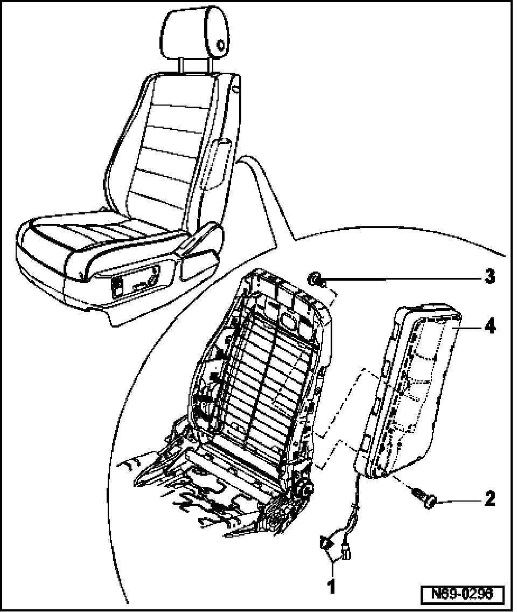

Side Air Bag: Service and Repair
Side Airbags For Driver And Front Passenger, Removing And Installing
NOTE: Removal and installation is described for left-hand side of vehicle. Removal and installation for right-hand side is performed in same manner.
Removing
CAUTION: Observe safety precautions for work on airbags.
- Remove belt anchor.
- Remove 12-way seat.
- Remove backrest hinge trim for 12-way seat.
- Remove trim for 12-way seat.
- Remove backrest for 12-way seat.
- Remove front seat backrest cover and cushions for 12-way seat.
- Separate wiring harness - 1 - from backrest frame.
- Remove bolts - 2 - and - 3 - (4.5 Nm).

- Remove side airbag - 4 - from mounting in backrest frame.
Installing
- Installation is performed in reverse order of removal.